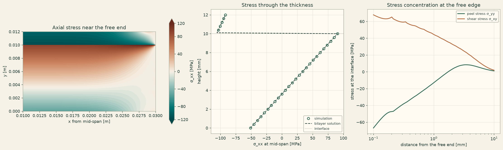

Docs › Examples › Thermal stresses in a coated plate
Thermoelasticity · 2D
Thermal stresses in a coated plate
A ceramic-coated substrate cooled from its stress-free temperature: bending, interface stresses and the peel stress concentration at the free edge.

What it computes
OneSimulation solves plane-strain thermoelasticity with quadratic hexahedra on a section graded towards the free ends and the interface, with the two materials varying across the thickness, and repeats the solve for a three-times-longer plate.
What it checks
Away from the ends the stresses match the closed-form bilayer solution to 0.01 %, the section is in force and moment equilibrium, and the edge stresses are mesh-converged at fixed distances from the corner.
The notebook
The complete notebook, cell by cell. Run it to produce the figures and the comparison printout.
A substrate plate (10 mm thick) carries a coating (2 mm thick). The coating is deposited at 800 °C, where both layers are stress free, and the plate is then cooled to 150 °C. The substrate contracts more than the coating, so the coating ends up in compression and the plate bends. Near the free ends the stresses must turn around, which concentrates peel and shear stress at the interface.
| layer | \(E\) | \(\nu\) | \(\alpha\) | |---|---|---|---| | substrate | 130 GPa | 0.28 | \(3\cdot10^{-6}\) 1/K | | coating | 70 GPa | 0.17 | \(5\cdot10^{-7}\) 1/K |
The plate is long in the third direction and is in plane strain, \(u_z=0\).
Reference. Away from the ends the plate behaves like a bilayer beam (Timoshenko, 1925). With \(E_i'=E_i/(1-\nu_i^2)\) and the thermal strain \(e_i=(1+\nu_i)\alpha_i\Delta T\),
where the two balances fix the strain \(\varepsilon_0\) and the curvature \(\kappa\).
from dataclasses import replace
import numpy as np
from onesim.cad.d2 import Plane
from onesim.cad.d3 import Box
from onesim.materials import IsotropicSolid
from onesim.meshing import Geometric, Piecewise, StructuredHexahedralMesher, Uniform
from onesim.numerics import Numerics
from onesim.numerics.fem import FiniteElement, Lagrange
from onesim.numerics.field_transfer import FiniteElementEvaluation
from onesim.numerics.linear import SparseDirect
from onesim.physics.heat_transfer import FixedTemperature, HeatConduction
from onesim.physics.solid_mechanics import FixedDisplacementComponents, IsotropicThermalExpansion, LinearElasticity, TractionFree
from onesim.simulation import Problem, Simulation, regionwise
from onesim.simulation.field_connections import FieldCoupling
from onesim.visualization import theme, plots
theme.set()
half_length, substrate, coating, slab = 0.030, 0.010, 0.002, 0.0005
layers = {"substrate": (130e9, 0.28, 3.0e-6), "coating": (70e9, 0.17, 5.0e-7)}
deposition, final = 1073.15, 423.15
def bilayer_stress(y):
"""Axial stress of the bilayer beam at the height y."""
stiffness, load = np.zeros((2, 2)), np.zeros(2)
for (E, nu, alpha), (lower, upper) in zip(layers.values(), ((0, substrate), (substrate, substrate + coating))):
moments = [(upper**k - lower**k) / k for k in (1, 2, 3)]
stiffness += E / (1 - nu**2) * np.array([moments[:2], moments[1:]])
load += E / (1 - nu**2) * (1 + nu) * alpha * (final - deposition) * np.array(moments[:2])
strain, curvature = np.linalg.solve(stiffness, load)
E, nu, alpha = (np.where(np.asarray(y) > substrate, c, s) for s, c in zip(*layers.values()))
return E / (1 - nu**2) * (strain + curvature * np.asarray(y) - (1 + nu) * alpha * (final - deposition))Model
A thin slab of one half of the 60 mm long plate: \(u_z=0\) on both slab faces gives plane strain, and the mid-span is a symmetry plane, held at its lower edge. The material properties are given layer by layer, and the mesh is graded towards the interface and the free end. The uniform final temperature comes from a heat-conduction model and enters the mechanics as thermal strain.
plate = Box(length=half_length, width=substrate + coating, height=slab)
faces = plate.boundaries
coat = Box(length=half_length, width=coating, height=slab, origin=(0.0, substrate, 0.0))
layered = lambda index, unit: regionwise(((coat, layers["coating"][index]),), default=layers["substrate"][index], unit=unit)
material = replace(IsotropicSolid(density=3000.0, specific_heat_capacity=700.0, thermal_conductivity=30.0,
youngs_modulus=1e9, poisson_ratio=0.3, thermal_expansion_coefficient=1e-6),
youngs_modulus=layered(0, "Pa"), poisson_ratio=layered(1, "1"), thermal_expansion_coefficient=layered(2, "1/K"))
across = Piecewise(((substrate, Geometric(12, ratio=40.0, toward="end")), (coating, Geometric(6, ratio=8.0))))
mesh = StructuredHexahedralMesher(cells=(24, 18, 1), grading=(Geometric(24, ratio=50.0, toward="end"), across, Uniform(1))).generate(plate)
numerics = Numerics(spatial=FiniteElement(element=Lagrange(order=2)), linear_solver=SparseDirect())
heat = HeatConduction(domain=plate.volume, material=material)
cooled = Simulation(problem=Problem(name="Final temperature", geometry=plate, physics=(heat,), boundary_conditions=(
FixedTemperature(boundary=faces.all, physics=heat, value=final),)), mesh=mesh, numerics=numerics).solve_stationary()
solid = LinearElasticity(domain=plate.volume, material=material,
thermal_strain=IsotropicThermalExpansion(reference_temperature=deposition))
problem = Problem(name="Coated plate", geometry=plate, physics=(solid,), boundary_conditions=(
TractionFree(boundary=faces.x_max | faces.y_min | faces.y_max, physics=solid),
FixedDisplacementComponents(boundary=faces.z_min | faces.z_max, physics=solid, components=("z",)),
FixedDisplacementComponents(boundary=faces.x_min, physics=solid, components=("x", "y"),
where={"y": lambda x, y, z: y < 1e-9})),
couplings=(FieldCoupling(source=cooled.field(heat.temperature), target=solid.temperature, transfer=FiniteElementEvaluation()),))
stress = Simulation(problem=problem, mesh=mesh, numerics=numerics).solve_stationary().field(solid.stress)Results
The axial stress at mid-span against the bilayer solution.
heights = {"lower face": 2e-6, "substrate at the interface": substrate - 2e-6, "coating at the interface": substrate + 2e-6,
"upper face": substrate + coating - 2e-6}
at_mid_span = stress.evaluate([[1e-6, y, slab / 2] for y in heights.values()])[:, 0]
print(f"{'position':28s} simulation [MPa] bilayer [MPa]")
for (label, y), value in zip(heights.items(), at_mid_span):
print(f"{label:28s} {value / 1e6:16.2f} {bilayer_stress(y) / 1e6:15.2f}")Figure
The axial stress near one end of the plate, the stress through the thickness at mid-span, and the peel and shear stress along the interface towards the free end.
megapascal = lambda s, position: s[:, 0] / 1e6
y = np.linspace(1e-6, substrate + coating - 1e-6, 121)
through = stress.evaluate(np.column_stack((np.full_like(y, 1e-6), y, np.full_like(y, slab / 2))))[:, 0]
distance = np.geomspace(1e-4, 0.01, 80)
interface = stress.evaluate(np.column_stack((half_length - distance, np.full_like(distance, substrate - 2e-6), np.full_like(distance, slab / 2))))
fig = plots.figure(1, 3, size=(17, 5))
plots.section(stress, plane=Plane(origin=(0, 0, slab / 2), normal=(0, 0, 1)), component=megapascal, colormap="diverging",
limits=(-110, 110), subdivisions=3, label="σ_xx [MPa]", title="Axial stress near the free end",
xlimits=(0.01, 0.03), xlabel="x from mid-span [m]", ylabel="y [m]", ax=fig[0])
plots.line(points={"simulation": (through[::4] / 1e6, 1e3 * y[::4])}, reference={"bilayer solution": (bilayer_stress(y) / 1e6, 1e3 * y)},
hlines={"interface": 1e3 * substrate}, xlabel="σ_xx at mid-span [MPa]", ylabel="height [mm]",
title="Stress through the thickness", legend="lower right", ax=fig[1])
plots.line(1e3 * distance, {"peel stress σ_yy": interface[:, 1] / 1e6, "shear stress σ_xy": interface[:, 3] / 1e6},
scale="logx", xlabel="distance from the free end [mm]", ylabel="stress at the interface [MPa]",
title="Stress concentration at the free edge", ax=fig[2])
plots.show()Going further
Make the coating thinner and the stress in it approaches the film limit \(E_c'(1+\nu)\,\Delta\alpha\,\Delta T\); add a compliant interlayer and watch the edge stresses drop.